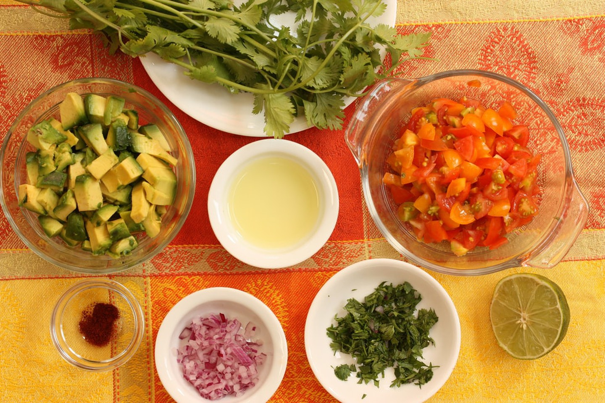
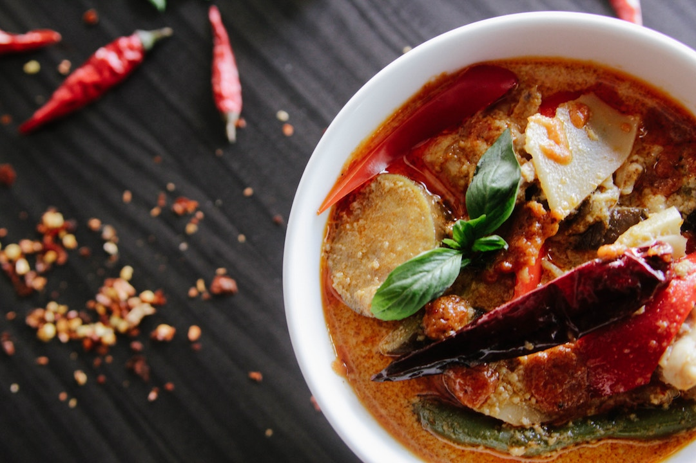
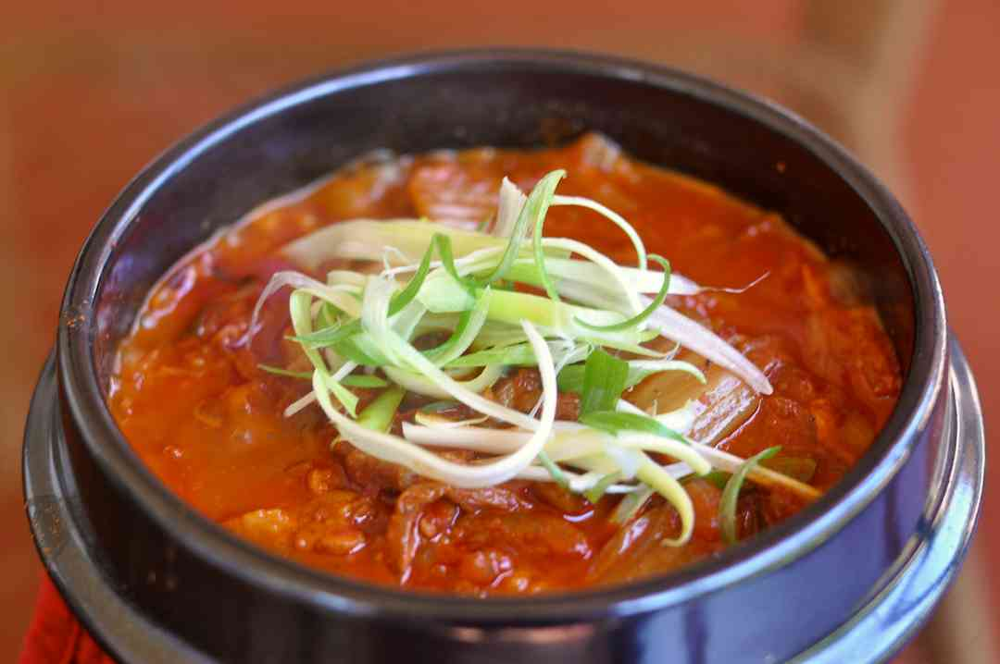
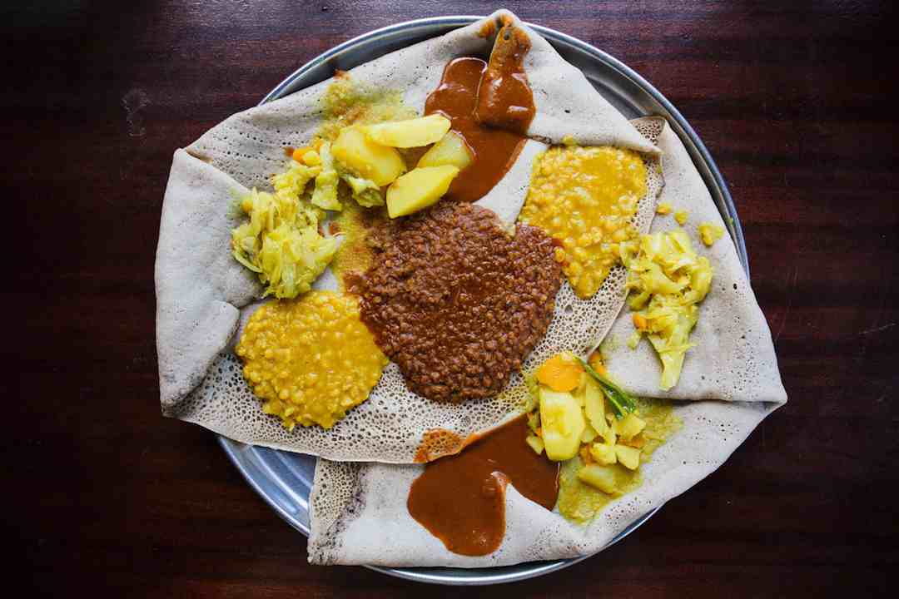
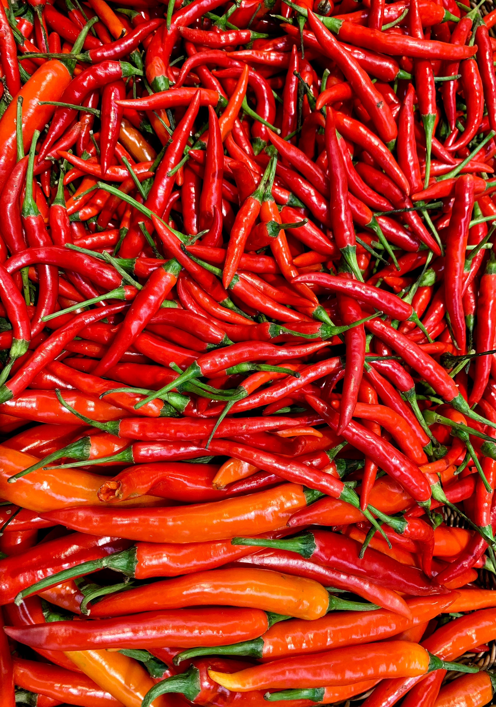
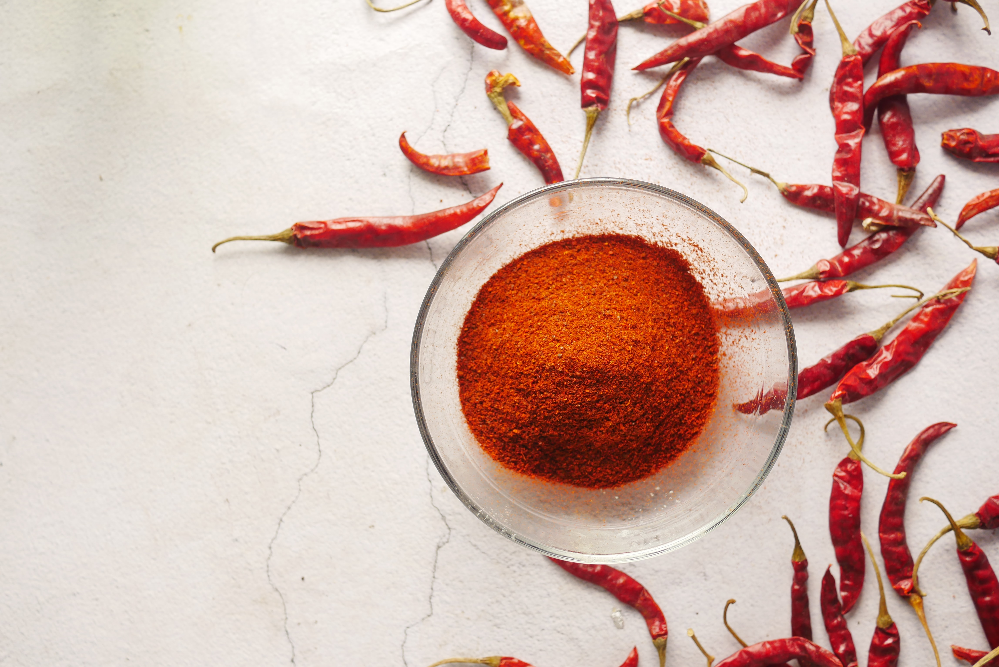
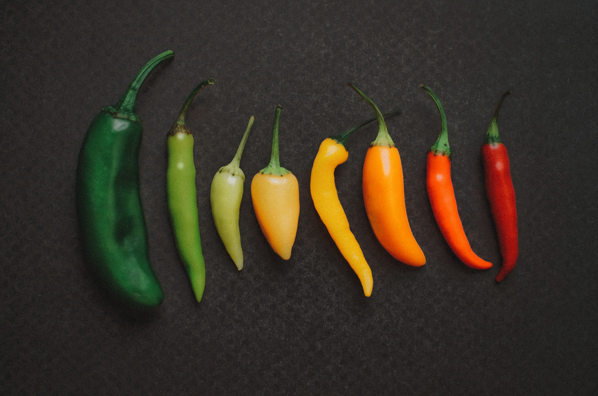

One magic thing about spiciness is that it is the key ingredient of many famous and beloved dishes around the world. The list below displays some dishes liked by spicy lovers worldwide.
Salsas
Origin: Mexico
Type of food: Condiment
Spicy ingredient: many types of chilies, including Jalapenos.
Fun fact: Mexico’s biggest spicy export and its favorite condiment, salsas are a world unto themselves.
The varieties are endless, but the base of chillies, fresh herbs, and red or green tomatoes is ubiquitous. While visitors to Mexico wanted to nail down a guideline as to which salsa is hotter, red or green, any seasoned taco-eater will tell you that either could be blazing hot or surprisingly mild. While the creamy avocado green sauce served at many taco stands tends to be a little less intense, it could easily blow your socks off. Often, salsa with chile de árbol or habanero peppers will be extra-hot.
Tom Yum
Origin: Thailand
Type of food: Soup
Spicy ingredient: Crushed chilli peppers.
Fun fact: It’s one of the most popular Thai dishes across the globe.
Although this hot and sour shrimp soup originates from Central Thailand, it can also be found in countries such as Cambodia, Myanmar, Singapore or Laos. If you’re looking for a partner to follow this spicy soup, make sure you team it up with a pad thai or pad see ew (a mild noodle dish if you can’t handle the heat).
Kimchi-jjigae (kimchi soup)
Origin: South Korea
Type of food: Stew
Spicy ingredient: Kimchi and chilli peppers.
Fun fact: It takes between one and three months to make a Korean-style kimchi.
You might not expect South Korea to harbour some of the spiciest dishes in the world, but it does. If you’re looking for a unique gastronomy jaunt, South Korea should be next on your go-to list. The street markets are out of this world and Seoul is unquestionably foodie hub.
Sik Sik Wat
Origin: Ethiopia
Type of food: Stew
Spicy ingredient: Berbere, an Ethiopian spice mixture
Fun fact: Berbere is basically added to everything in Ethiopia
If you’re looking to shock your tastebuds, this is the dish for you. In Ethiopia, the distinct cultural heritage is evident in the rich, diverse flavours of each dish. Sik Sik Wat is essentially hearty (not to mention SPICY) stew made up of a few sauces combined with meat or vegetables. Hungry for more? Take a look at our 12-Month Guide to the Best Food Festivals Around the World.
  